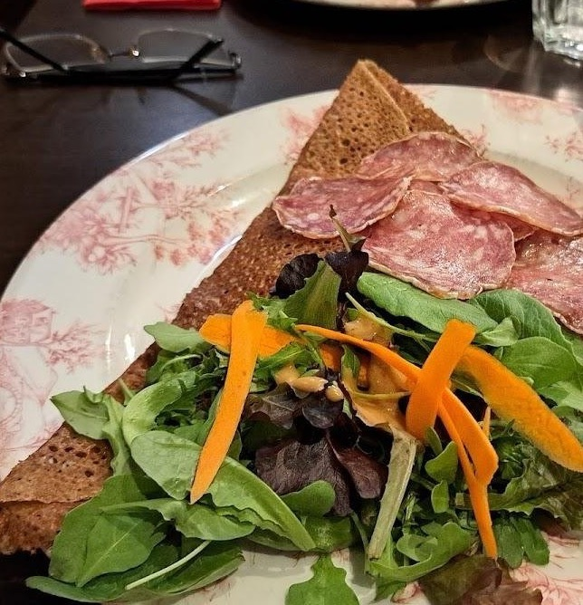
Les galettes de sarrasin
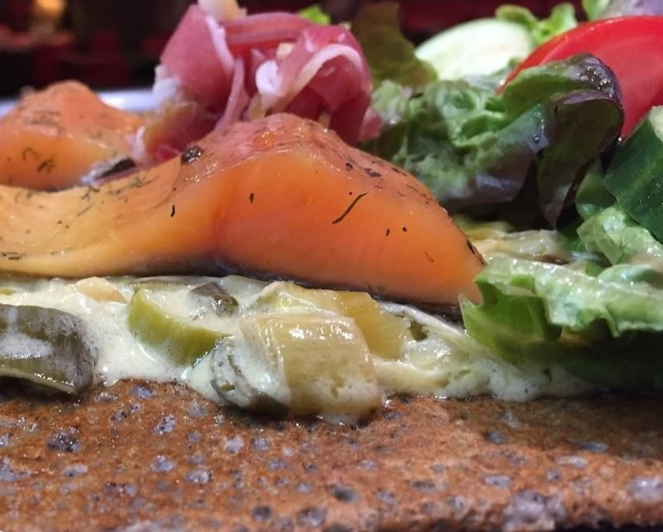
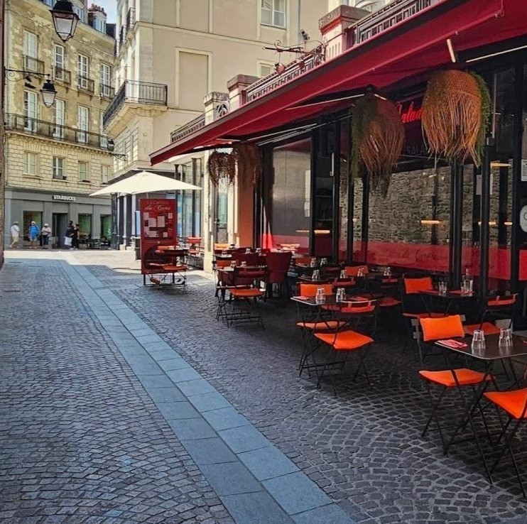
Crêperie — Saladerie · Bouffay, Nantes
Galettes de sarrasin généreuses et cidre à la bolée, servis sur les pavés de la rue Sainte-Croix depuis la plus vieille place de Nantes.
Au Bouffay, entre les pans de bois et les terrasses serrées, il y a une devanture rouge qu'on repère de loin. Une billig qui fume, des bolées de cidre, des salades qui débordent de l'assiette : La Cantine du Curé fait ce qu'une cantine doit faire — nourrir le quartier, sans chichi.
Ici les galettes arrivent pliées à la nantaise sur des assiettes fleuries, la terrasse déborde sur les pavés dès qu'il fait beau, et le clocher de Sainte-Croix sonne juste au-dessus des parasols.
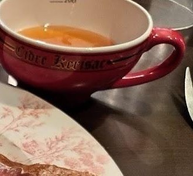
La carte
Aperçu de ce qui sort de la billig — intitulés exacts et prix à confirmer auprès de la maison.


La partie saladerie de la maison — pour les jours sans sarrasin.
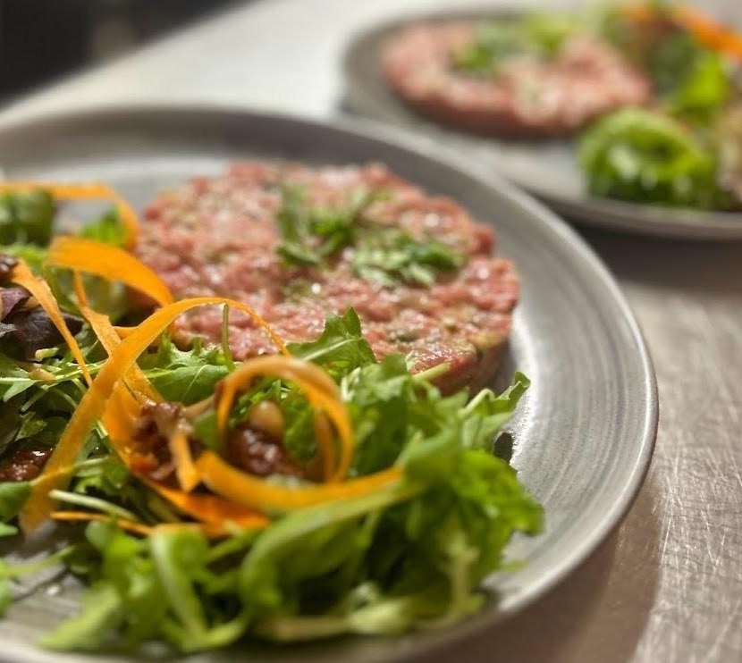
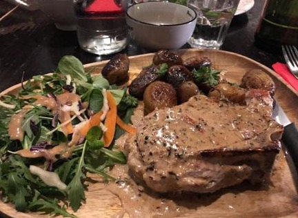
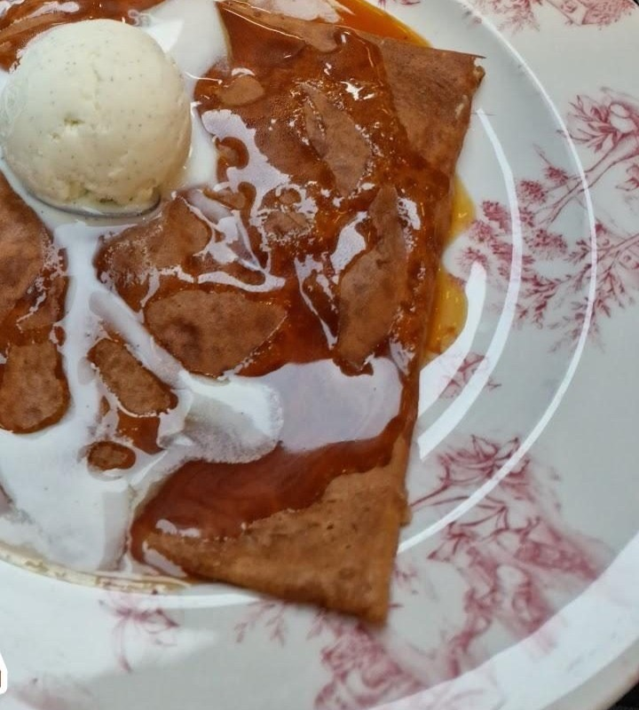
Et pour accompagner : cidres artisanaux à la bolée, bières de la région.
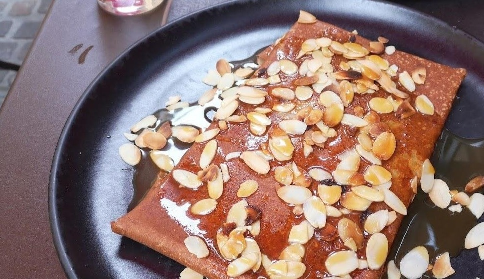
La maison tient boutique au n°1 de la rue Sainte-Croix, à l'ombre du clocher de l'église du même nom. De là à dire que le curé de la paroisse y avait sa table — le mystère reste entier.
Ce qui est sûr : on y mange comme à la cantine, généreusement et sans façon. La question du curé, elle, se pose en salle, une bolée à la main.
❦ 1, rue Sainte-Croix — paroisse du Bouffay ❦
Le lieu
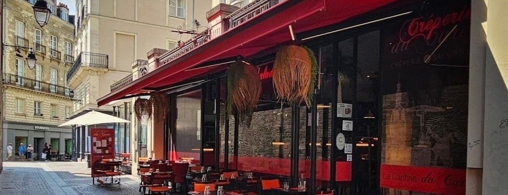
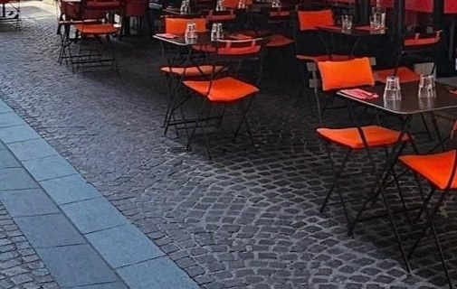
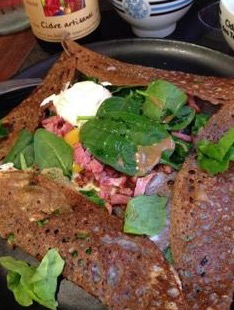
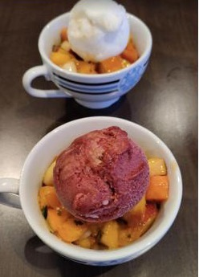
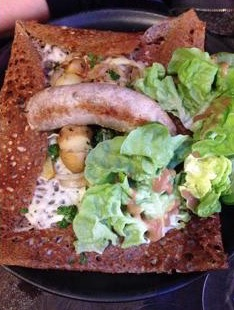
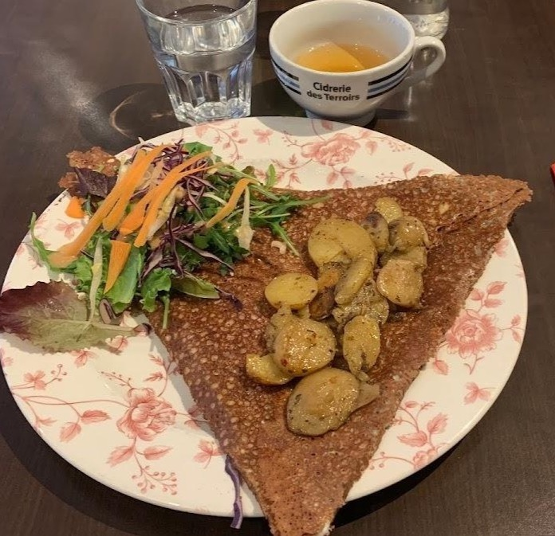
Infos pratiques